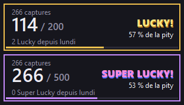

Compteur pity Lucky / Super Lucky
Une petite fenêtre par-dessus Aniimo qui compte vos captures toute seule et vous dit où vous en êtes de la garantie des Coups de chance.

Ce qu'il fait
Captures automatiques
Chaque carte de capture qui apparaît à gauche de l'écran compte, captures de groupe comprises. Une capture de masse au Culbuton aussi.
Lucky reconnus au son
Il n'écoute que le jeu (pas Discord ni votre musique) et reconnaît « Lucky! » et « Super Lucky! ».
Garantie en clair
Captures depuis le dernier coup sur la capture garantie, pourcentage, coups obtenus depuis lundi, temps avant le reset.
Floraison
Ouvrez le menu Enrichir : énergie prismatique de la zone, points manquants, et combien de Lucky, de Super Lucky ou de Floraisons il faut.
Installer
- Téléchargez Compteur-pity-Aniimo.zip et dézippez-le dans un dossier à vous.
- Lancez Compteur pity Aniimo.exe. Si Windows affiche « Windows a protégé votre ordinateur » (programme non signé) : Informations complémentaires > Exécuter quand même.
- Déjà capturé depuis lundi ? Clic droit sur le compteur > Régler les compteurs…
Mises à jour : à partir de la 1.3.0, le compteur peut chercher ses nouvelles versions (il vous le demande au premier lancement). Quand une version sort, la bulle porte un point doré et le menu propose Installer la version… : il la télécharge, la vérifie et redémarre, en gardant vos compteurs et vos réglages. Depuis une version plus ancienne, remplacez simplement Compteur pity Aniimo.exe par le nouveau.
Il faut Windows 10 (2004 ou plus récent) ou 11, le jeu en plein écran fenêtré ou fenêtré, en français, avec les effets sonores activés. Réglé en 2560×1440, mis à l'échelle pour les autres résolutions 16:9.
Utiliser
Rien à faire : chaque capture fait +1. Les touches servent seulement à corriger : F7 capture oubliée, F8 Lucky, F9 Super Lucky, F6 annuler.
- Réglages (clic droit > Réglages…) : choisissez ce qui s'affiche (cadre Lucky, cadre Super Lucky, bandeau Floraison, opacité), changez les touches, choisissez le serveur.
- Le jeu utilise F7, F8 et F9 pour ses photos : passez les touches du compteur sur le pavé numérique ou Ctrl + une touche.
- Un clic sur la bulle (le logo) ouvre le menu, qui reste ouvert jusqu'à ce que vous le fermiez.
- Chaque panneau se place où vous voulez : glisser pour en déplacer un, Maj + glisser pour tous. Ils s'aimantent entre eux et aux bords de l'écran. Dans le menu, chacun se verrouille ou se lie aux autres.
- Ctrl + molette sur un panneau pour l'agrandir ou le rétrécir. Clic droit : les détails et le menu.
- Réglages > Lancer le compteur avec Windows : il attend Aniimo en arrière-plan et ses panneaux apparaissent quand le jeu se lance.
- Quelque chose ne se compte pas ? Jeu ouvert, menu > Vérifier le fonctionnement.
Les règles, tirées du jeu
| Déjà eus cette semaine | Chance par capture | Garanti à | |
|---|---|---|---|
| Lucky | 0 à 9 | 1 % | 200 |
| Lucky | 10 et plus | 0,5 % | 400 |
| Super Lucky | 0 | 0,2 % | 500 |
| Super Lucky | 1 | 0,1 % | 1 000 |
| Super Lucky | 2 et plus | 0,05 % | 3 000 |
Énergie prismatique d'une zone : Vide 0 · Très faible 501 · Léger 1 501 · Abondant 3 001 · Très élevé 6 001 · Plein 10 500 (Aniimo prismana garanti). Un Lucky ajoute 275 à 500 points (302,5 en moyenne), un Super Lucky 1 500.
Est-ce sans risque ?
Le compteur ne lit ni la mémoire ni le réseau du jeu et ne modifie aucun de ses fichiers. Il regarde une petite zone de l'écran et reçoit le son d'Aniimo par Windows, comme OBS ou Discord. Il ne se connecte à Internet que pour ses mises à jour, si vous l'acceptez. C'est un outil non officiel, sans lien avec NetEase, et les conditions d'utilisation du jeu peuvent interdire les outils tiers : vous l'utilisez à vos risques.
Code signing policy
Free code signing provided by SignPath.io, certificate by SignPath Foundation.
Demande en cours auprès de SignPath Foundation : tant qu'elle n'est pas acceptée, le programme n'est pas signé et Windows affiche son avertissement.
- Le programme est construit par GitHub Actions à partir du code du dépôt, puis signé. Seul le programme de ce projet est signé.
- Chaque signature est approuvée à la main avant la publication d'une version.
- Committers and reviewers : Zanpil. Approvers : Zanpil.
- Les comptes GitHub et SignPath de l'équipe utilisent l'authentification à deux facteurs.
Confidentialité (privacy policy)
This program will not transfer any information to other networked systems unless specifically requested by the user or the person installing or operating it.
Le compteur ne se connecte à Internet que pour ses mises à jour, et seulement si vous l'avez accepté (il le demande au premier lancement, et ça se change dans les réglages) ou si vous les cherchez depuis le menu. Il demande alors à GitHub le numéro de la dernière version, puis télécharge le zip si vous l'installez. Il n'envoie rien d'autre : ni vos captures, ni vos réglages, ni rien sur votre PC.